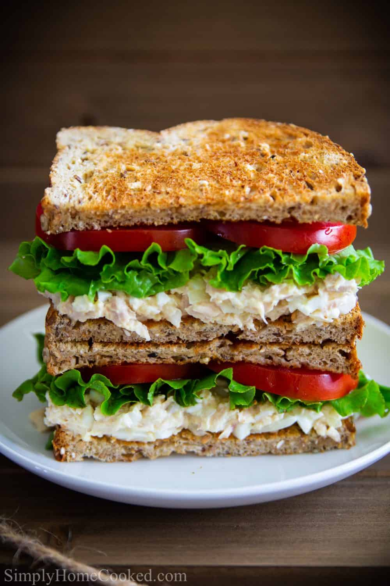

Tuna Salad Sandwich

A yummy sandwich to please the masses
Ah, yes. The classic tuna salad sandwich. What seems like
a simple recipe is actually not for the faint of heart.
Kids, don't try this at home. Adult supervision required.
Ingredients
- Bread (slices)
- Can of tuna
- Mayo (not Miracle Whip)
- Sald and pepper
- Tomato
- Probably lettuce
Steps
- Drain a can of tuna and slap it into a bowl
- Add mayo to bowl and mix in with tuna
- Mix in salt and pepper
- Grab two slices of bread (toast if desired)
- Spread mixture onto bottom slice of bread
- Add only one slice of both tomato and lettuce
- Top off with the other slice of bread
- Take a big ol' bite!